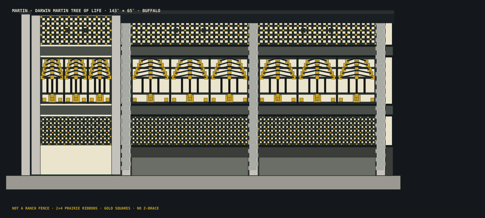

G-001 · Governance / cover
Release, datums, thesis
Release
FABRICATION-READY WITH CONDITIONS
Risk
R2 — outdoor installation, wind on ~64 sf face, driveway occupancy / vehicle adjacency, pet containment, seasonal knock-down
Layout
CENTERLINE for posts. Post CLs P0–P3 are the governing stations; convert to faces with post_x/2. Vertical Datum A = driveway sill top (z=0). Horizontal origin: latch-side outer face x=0. Never mix face and centerline without conversion.
Units
inch controlling; millimetre at CAD export only
Design thesis
Wright at a distance is eave + thin belt courses + brick piers + gold-square lights — not five fat horizontal slats. The garden face is a Darwin Martin Tree of Life wood light-screen: 2×12 PT water table, ¾″ dog-grid cassette, projecting 2×4 ribbon, three-tree cassette, ribbon at latch CL, nested-rect cassette, cantilevered 2×12 eave with 1×4 fascia. Gate flush to the house. Live planters ballast the two privacy bays only.
Conditions — close these before cutting finish stock
- TBM overall_length 143″ on the driveway
- Buffalo Green Code height / front-yard confirmation
- Plant F-005 before wind season (QC-15 ballast ratio ≥ 1)
- 120 V feed to H-006B by a qualified electrician
- 3D-print T-501 kusabi + T-502 tenon + pivot socket before milling oak/4×6
- Owner gray swatch before finish coats
Do not treat a rendering, this HTML book, or the Build app viz as a scaled fabrication drawing. Controlling numbers live in martin_kernel.py and the dimensioned SVG sheets.
G-002 · Requirements traceability
MUST / SHOULD / EXCLUDED
| ID | PRI | STATEMENT | VERIFY | STATUS | EVIDENCE |
|---|---|---|---|---|---|
| FUN-001 | MUST | Freestanding 143″ run sits on the driveway slab; 100% dog containment | QC-08 aperture + QC-15 ballast + gate bottom 0.375″ | PROPOSED | G |
| FUN-002 | MUST | Gate flush to the house at P0; no planter at the gate | layout posts[0] + F-005 only P1–P2 / P2–P3 | PROPOSED | G |
| FUN-003 | MUST | Winter knock-down without buried hardware | AS-12 rehearsal; never glue kusabi | PROPOSED | G |
| ENV-001 | MUST | Buffalo 4-season: paint weather system, PT splash, end-grain sealer | H-005 schedule + K-001 PT | PROPOSED | G |
| DIM-001 | MUST | Envelope 143″ L × 65″ H; primary units inch; datums x=0 latch face, z=0 sill top | TBM overall_length on driveway | OPEN | G/TBM |
| LOAD-001 | MUST | Planning wind FS 1.5 via live planters; not PE-stamped | ballast.ratio ≥ 1.0 after planting | PROPOSED | D |
| MAT-001 | MUST | Wood + lighting + a gate latch. No nails/screws in timber structure. | BOM MAKE vs BUY; McMaster limited to pads/light/optional hasp/oak rod | PROPOSED | G |
| JNT-001 | MUST | Through-nuki + kusabi on K-001, R-001, R-002 only; cassettes groove in | J-401 + three mortises per post | PROPOSED | D |
| JNT-002 | MUST | Oak pivots ⌀1.25″ at P1 (sill + soffit); Latch B into P0 | J-404; W-003 from 96825K84 | PROPOSED | G |
| AESTH-001 | MUST | Darwin Martin Tree of Life light-screen — eave, thin Prairie ribbons, Roman-brick piers, gold-square cassettes. Not a ranch fence. | GA-110 motifs; Q-002 three trees + gold jewels; no Z-brace on garden face; belt_h=3.50″ | PROPOSED | G |
| AESTH-002 | SHOULD | φ sizes cassette pair (~11.26 / 18.22); ribbons stay 2×4 — do not substitute 2×10 | layout light_minor/major; stock 3.50″ belts | PROPOSED | D |
| SAFE-001 | MUST | Risk R2 outdoor fence. Release FABRICATION-READY WITH CONDITIONS. Not a PE stamp. | G-001 banner; Buffalo Green Code TBM | OPEN | P |
| DOC-001 | MUST | WOODWRIGHT PLANFORGE guidebook + LEGO manual + fab drawings + McMaster schedule | /fence/martin/planforge/ + /manual/ + /fab/ | PROPOSED | G |
| EXCL-001 | EXCLUDED | Post holes, cement, stone/gravel pads, planter at P0, structural screws in timber, Z-brace garden face | BOM contains none of these | VERIFIED | G |
Vague adjectives are not specs. “Jaw-dropping” maps to AESTH-001 (Tree of Life motifs on GA-110, no Z-brace garden face) plus J-series joinery that is cuttable with the owner’s hand tools.
G-003 · Evidence / assumptions / revision
What is known vs assumed
Evidence classes: G given · M measured · S sourced · D derived · A assumed · E estimated · T test · P professional-verify · TBM to be measured.
| ID | DESC | CLASS | RELIABILITY | VERIFY |
|---|---|---|---|---|
| EV-001 | Owner envelope 143″ × 65″ | G | high pending TBM | remeasure driveway house-siding to existing fence |
| EV-002 | Photos: run crosses driveway; gate at house | G | high | site walk |
| EV-003 | Darwin Martin House Tree of Life as aesthetic thesis (owner visited) | G | intent | GA-110 vs ranch-slat anti-pattern |
| EV-004 | McMaster 60015K58 pad 4″×4″×¾″ segmented 50A (catalog 2026-08-23) | S | catalog 2026-08-23 | open https://www.mcmaster.com/60015K58/ before order |
| EV-005 | McMaster 8836N52 16′ IP67 2700K ½″ tape + 8836N24 96W driver + 8836N75 connector (catalog 2026-08-23) | S | catalog 2026-08-23 | open product pages; electrician for 120 V |
| EV-006 | McMaster 96825K84 ⌀1¼″ / 96825K75 ⌀⅜″ oak rods (catalog 2026-08-23) | S | catalog 2026-08-23 | measure rod OD before boring sockets |
| EV-007 | Wind ballast planning FS 1.5 | D | planning only | licensed PE if required by Buffalo; QC-15 after planting |
| EV-008 | Buffalo Green Code fence height / front yard | P | unverified | city before build; 65″ designed under 6′ |
| EV-009 | Owner gray hex | TBM | open | swatch before paint |
| EV-010 | USDA FPL Wood Handbook moisture/movement (general) | S | handbook | acclimate stock; do not glue cross-grain nuki |
Decisions that freeze the face
- D-001 4×6 posts not 4×4 nuki cheeks + housed-slat web; owner asked to overbuild
- D-002 Darwin Martin Tree of Life light-screen: 2×12 water table + two projecting 2×4 Prairie ribbons + three recessed muntin cassettes (φ pair on the LIGHTS, ~11.26 / 18.22). Fat 2×10 belts still read as a Home Depot ranch fence. Wright at a distance is eave + thin belt courses + brick piers + gold-square lights. φ sizes the cassette pair, not the ribbons.
- D-003 No nails/screws in timber. Allowed metal: lighting + optional latch hardware. owner + winter knock-down + fastener corrosion in Buffalo
- D-004 Sit-on-grade timber ladder on the driveway slab. No packing unless outriggers leave the slab. Photos: run crosses the driveway. No post holes, no cement, no stone pads.
- D-005 Gate flush to the house (P0). No planter at the gate. Owner: planter next to gate is unwanted. Latch B into P0. Driver lives in P3 planter.
- D-006 Foot tenon 2.50×4.50×3.50 into F-003 Cross-tie is 5.50″ tall; leave ~2″ below mortise. Overturning resisted by ladder + live planters.
- D-007 Through-nuki only K-001 + R-001 + R-002. Cassettes groove into nuki edges; three mortises keep the post web. Seven through-mortises would shred the 4×6. Belts + water table are the structure. Lights are withdrawable cassettes.
- D-008 Latch B default (mortise in L-001). No epoxy into house. Owner: wood + lighting + a gate latch. Latch A oak strike is opt-in only.
- D-009 Live planters (P1–P2 and P2–P3) as wind ballast. Stone inside boxes only. Owner: planters are planters with watering. Mass = wet soil + optional drainage stone. Not bags, not a pad.
- D-010 1.25″ oak pivots (W-003): bottom in sill at P1, top in cap soffit. Structurally best on a freestanding hinge post: leaf weight in compression to the driveway sill, not a cantilever pintle off P0 (no planter at house).
- D-011 Solid 2×12 PT water table + Q-001 0.75″ dog grid + 0.375″ gate bottom clear. Upper lights 1.15″ max. 100% dog containment. Kick is the crawl stop. Pattern is a Wright light-screen, not a radiator of ¾″ gaps.
- D-012 Buffalo painted finish: ease 1/16″, end-grain sealer, PT dry then prime, 2 coats, extra on planter interiors. Four-season Erie County. Mask joinery faces. Paint is the weather system.
- U-01 [VERIFIED/TBM] Outrigger packing only if garden sill leaves the slab (default 0 — photos show driveway run)
- U-02 [ASSUMED] Latch: default B (mortise in L-001). House wall strike is opt-in, no epoxy.
- U-03 [TBM] Owner gray exact color
- U-04 [TBM] Buffalo Green Code district height / front-yard
- U-05 [ASSUMED] Swing direction (garden vs driveway)
- U-06 [OPTIONAL] Species upgrade (cedar / locust)
- U-07 [NOT THIS PACKAGE] Licensed PE stamp
- U-08 [TBM] Remeasure 143″ on the driveway (photos confirm span to house siding)
G-004 · Safety / FMEA / professional review
Hazards in proportion to R2
Licensed NY design professional if the AHJ treats this as a fence requiring permit engineering. This package is not PE-stamped.
120 V to driver 8836N24 is electrician work. Tape in the soffit is 24 V. Do not stand the empty fence in a Buffalo gale — plant the troughs (QC-15) first. Never glue kusabi. Never pour. Never fasten the ladder into the driveway.
| MODE | CAUSE | EFFECT | SEV | LKL | DET | MIT |
|---|---|---|---|---|---|---|
| Wind overturning | lake-effect gusts on ~64 sf face | ladder tips | 8 | 5 | 6 | 36″ sill spread + F-006 braces + wet soil/stone in two garden troughs (planning FS 1.5); deepen planters if QC-15 ratio < 1 |
| Slide on pavement | ice / low friction | walks off station | 5 | 4 | 7 | rubber pads H-001; planter weight; optional non-marking chocks — still no fasteners into driveway |
| Dog crawl | gap under gate or kick, or Q-001 aperture > 0.75″ | containment fail | 7 | 3 | 8 | K-001 2×12 nuki at z=0; Q-001 0.75″ dog grid; others 1.15″ max; gate bottom 0.375″ |
| Post web failure | through-mortising every layer | split post | 8 | 2 | 9 | through-nuki only water table + two belts; cassettes groove in |
| Planter rot / wet posts | live watering against timber | post / box decay | 6 | 5 | 6 | PT boxes; ½″ air gap; drainage slots; extra interior paint; kick is PT |
| Gate/cap collision | height stack | won't close / crushed cap | 5 | 1 | 9 | derived gate_h; QC-14 |
| Glued kusabi | habit | cannot winter-strip | 6 | 3 | 8 | QC-10; labels NEVER GLUE |
| Plow berm hit | winter leave-in-place | broken rails | 7 | 7 | 9 | designed knock-down: empty planters → braces → posts → ladder |
| Insufficient ballast | empty planters in a storm | tip | 8 | 4 | 8 | QC-15; plant + optional in-box stone before wind season |
| Hinge cantilever | pintles on unbraced P0 | post rack / latch bind | 7 | 3 | 8 | oak pivots: leaf weight into sill at P1, not off P0 |
A-101 / A-102 · Architecture
General arrangement — garden face
143″ overall · 65″ high · posts P0@1.75", P1@41.25", P2@91.25", P3@141.25" · bay_clear 46.5″ · nuki_len 109.5″ · cassette φ 11.263 / 18.224″. Print M-1 at 100% on A3; do not scale this screenshot.

Print M-1 at 100% on A3; do not scale this screenshot. Controlling numbers live in martin_kernel.py.

{kind=link}
{kind=link}
{kind=link}
{kind=link}
{kind=link}
What you should see (anti Home Depot)
- Solid 2×12 water table at grade — dog crawl stop, Wright earth line.
- Two projecting 2×4 Prairie ribbons past Roman-brick piers — not 2×10 ranch rails.
- Three recessed lights: ¾″ gold-square dog grid / three trees / nested squares.
- Thin-wide 2×12 eave + hanging fascia + soffit light. Gate is the same language, no Z-brace on the garden face.
J-101 · Joinery map
Japanese mechanical joints — no glue on locking faces
Primary layout is face/edge (x=0, z=0). Transfer post CLs with a story stick. Through-nuki only K-001 + R-001 + R-002 so the 4×6 web survives. Cassettes are kumiko-style muntin frames that drop into nuki-edge grooves and withdraw toward P3 for winter.
| JOINT_ID | JOINT_TYPE | PART_A | PART_B | LOCATION | FIT_CLASS | GLUE |
|---|---|---|---|---|---|---|
| J-001 | kick nuki 貫 | L-002 | K-001 | L-002 × K-001 @ z_cl=5.625" | SLIDING then INTERFERENCE via W-001 | NO — winter removable |
| J-002 | kick nuki 貫 | L-003 | K-001 | L-003 × K-001 @ z_cl=5.625" | SLIDING then INTERFERENCE via W-001 | NO — winter removable |
| J-003 | kick nuki 貫 | L-004 | K-001 | L-004 × K-001 @ z_cl=5.625" | SLIDING then INTERFERENCE via W-001 | NO — winter removable |
| J-004 | nuki 貫 + kusabi | L-002 | R-001 | L-002 × R-001 @ z_cl=25.763" | SLIDING then INTERFERENCE via W-001 | NO — winter removable |
| J-005 | nuki 貫 + kusabi | L-003 | R-001 | L-003 × R-001 @ z_cl=25.763" | SLIDING then INTERFERENCE via W-001 | NO — winter removable |
| J-006 | nuki 貫 + kusabi | L-004 | R-001 | L-004 × R-001 @ z_cl=25.763" | SLIDING then INTERFERENCE via W-001 | NO — winter removable |
| J-007 | nuki 貫 + kusabi | L-002 | R-002 | L-002 × R-002 @ z_cl=48.987" | SLIDING then INTERFERENCE via W-001 | NO — winter removable |
| J-008 | nuki 貫 + kusabi | L-003 | R-002 | L-003 × R-002 @ z_cl=48.987" | SLIDING then INTERFERENCE via W-001 | NO — winter removable |
| J-009 | nuki 貫 + kusabi | L-004 | R-002 | L-004 × R-002 @ z_cl=48.987" | SLIDING then INTERFERENCE via W-001 | NO — winter removable |
| J-010 | cassette groove / housed dado | L-002/003/004 + nuki edges | Q-001 | Q-001 @ z_cl=17.631" | SLIDING | NO — winter removable |
| J-011 | cassette groove / housed dado | L-002/003/004 + nuki edges | Q-002 | Q-002 @ z_cl=37.375" | SLIDING | NO — winter removable |
| J-012 | cassette groove / housed dado | L-002/003/004 + nuki edges | Q-003 | Q-003 @ z_cl=57.118" | SLIDING | NO — winter removable |
| J-013 | foot tenon into cross-tie shoe | L-001 | F-003 | P0 cx=1.75" into tie at y=0 | CLEARANCE / GRAVITY drop-in — winter lift-out | NO |
| J-014 | foot tenon into cross-tie shoe | L-002 | F-003 | P1 cx=41.25" into tie at y=0 | CLEARANCE / GRAVITY drop-in — winter lift-out | NO |
| J-015 | foot tenon into cross-tie shoe | L-003 | F-003 | P2 cx=91.25" into tie at y=0 | CLEARANCE / GRAVITY drop-in — winter lift-out | NO |
| J-016 | foot tenon into cross-tie shoe | L-004 | F-003 | P3 cx=141.25" into tie at y=0 | CLEARANCE / GRAVITY drop-in — winter lift-out | NO |
| J-017 | half-lap pegged (sill × tie) | F-001 / F-002 | F-003 | tie at P0 | SNUG + oak peg | NO |
| J-018 | half-lap pegged (sill × tie) | F-001 / F-002 | F-003 | tie at P1 | SNUG + oak peg | NO |
{kind=link}
{kind=link}
{kind=link}
{kind=link}
{kind=link}
{kind=link}
3D-print before you mill (PLA / PETG, 1:1)
- T-501 kusabi — confirm taper, cheek clearance, reverse-drive.
- T-502 foot tenon 2.50×4.50×3.50 into F-003 mortise.
- W-003 ⌀1.25″ pivot in sill + soffit sockets (locational, lift-off +Z).
- Kama-tsugi half at P2 — drawbore offset 0.125″.
Hand-tool sequence: knife walls → Japanese saw cheeks → Zenwu pare → Bridge City kerf/tenon for repeat rails → dry-fit under raking light → drawbore last. Never glue nuki or kusabi faces.
E-101 / E-102 · Exploded assembly (LEGO)
Twenty-four steps, six bags
The step-by-step manual is generated from the same kernel. Orange arrows are this-step motion. Numbered balloons match the BOM.
- AS-01 STOCK — Procure nested lumber + PT + oak rods 96825K84/K75 + pads 60015K58 + IP67 tape 8836N52/24
- AS-02 SITE — TBM 143″ opening on the driveway. Gate at the house. Do not dig. Do not pour.
- AS-03 BASE — Mill F-001..F-003 ladder; half-lap; dry-fit on slab pads; build two F-005 troughs (not at house)
- AS-04 MILL — Posts L-001..004 to S-014; 3.50″ tenons; through-nuki + housed dados
- AS-05 MILL — Water table K-001 + belts R-001/002; mill Tree of Life + nested-rect cassettes Q-*
- AS-06 MILL — Gate G-* hozo dry fit; brace; oak pivot sockets
- AS-07 JOINERY — Kusabi W-001; pegs W-002; cap scarf C-001 + light dado
- AS-08 DRY — Dry-assemble A-020: ribbons, cassettes, 0.75″ dog gauge on Q-001; QA QC-08
- AS-09 DRY — Hang gate on oak pivots at P1; latch travel into P0
- AS-10 FINISH — Ease, seal, PT dry, prime, two gray coats; extra on planter interiors; mask locking faces
- AS-11 SET — Set ladder on pads; drop posts; bands; wedges; cap light; gate; plant troughs + optional in-box stone
- AS-12 QA — QC-08..17; winter rehearsal
Solo handling: mill and dry-fit as modules. Slide nuki ribbons with two people (109.5″ × 2×4). Lift posts one at a time out of F-003. Do not ask one person to carry the assembled 143″ frame.
Irreversible hold points: (1) do not glue kusabi; (2) do not paint locking faces; (3) do not plant empty troughs after a wind warning without QC-15; (4) do not pour.
F-101 / F-102 · Fabrication
Part register (MAKE) · nest 314.71 bf net / 361.92 bf buy
| ID | Name | Qty | Buy | Finished T×W×L | Joinery |
|---|---|---|---|---|---|
| L-001 | P0 latch post | 1 | 4×6 × 8′ | 3.5 × 5.5 × 67.0 | foot tenon into F-003; through-nuki K-001 + R-001 + R-002; cassette dados for Q- |
| L-002 | P1 hinge post | 1 | 4×6 × 8′ | 3.5 × 5.5 × 67.0 | foot tenon into F-003; through-nuki K-001 + R-001 + R-002; cassette dados for Q- |
| L-003 | P2 mid post / cap scarf | 1 | 4×6 × 8′ | 3.5 × 5.5 × 67.0 | foot tenon into F-003; through-nuki K-001 + R-001 + R-002; cassette dados for Q- |
| L-004 | P3 end post | 1 | 4×6 × 8′ | 3.5 × 5.5 × 67.0 | foot tenon into F-003; through-nuki K-001 + R-001 + R-002; cassette dados for Q- |
| R-001 | BELT1 projecting Prairie ribbon | 1 | 2×4 × 10′ | 1.5 × 3.5 × 109.5 | nuki through L-002/003/004; kusabi |
| R-002 | BELT2 projecting Prairie ribbon / latch CL | 1 | 2×4 × 10′ | 1.5 × 3.5 × 109.5 | nuki through L-002/003/004; kusabi |
| K-001 | Water table nuki (earth line / dog seal) | 1 | 2×12 PT × 10′ | 1.5 × 11.25 × 109.5 | nuki through L-002/003/004; projects 3″ past piers |
| C-001 | Prairie eave (kama-tsugi pair) | 1 | 2×12 × 12′ | 1.5 × 11.25 × 110.5 | kama-tsugi scarf at L-003 centerline, drawbored; soffit dado for H-006 tape ligh |
| C-002 | Latch-post cap stub | 1 | from C-001 offcut / 2×12 | 1.5 × 11.25 × 4.5 | hozo to L-001 top |
| C-003 | Eave fascia (garden shadow) | 1 | 1×4 × 12′ | 0.75 × 3.5 × 110.5 | housed under C-001 garden edge; oak pegs |
| Q-001 | L1 nested-rects dog grid (¾″ max aperture) | 2 | 1×4 × 8′ (rip to ¾″ muntins) | 0.75 × 11.263 × 46.5 | framed cassette; drops into nuki grooves; winter pull toward P3 |
| Q-002 | L2 Tree of Life light (three trees, gold squares) | 2 | 1×4 × 8′ (rip to ¾″ muntins) | 0.75 × 18.224 × 46.5 | framed cassette; drops into nuki grooves; winter pull toward P3 |
| Q-003 | L3 nested-rects light (foliage / sumac) | 2 | 1×4 × 8′ (rip to ¾″ muntins) | 0.75 × 11.263 × 46.5 | framed cassette; drops into nuki grooves; winter pull toward P3 |
| Q-010 | Muntin rip stock (kumiko came + gold squares) | 8 | 1×4 × 8′ | 0.75 × 0.75 × 96.0 | rip, then cut to motif bars; half-lap at crossings optional |
| T-001 | Tectonic block (Darwin Martin pier texture) | 36 | 2×2 × 8′ / ripped 2×4 | 1.5 × 1.5 × 7.0 | ¼″ retention pegs — ½″ will split the 2×2 |
| G-001 | Gate hinge stile | 1 | 2×6 × 8′ | 1.5 × 3.5 × 62.625 | hozo mortises for gate bands; oak pivot gudgeons top+bottom (not pintles) |
| G-002 | Gate latch stile | 1 | 2×6 × 8′ | 1.5 × 3.5 × 62.625 | hozo mortises; latch-bar mortise |
| G-003 | Gate rail aligned to BELT1 | 1 | 2×4 × 8′ | 1.5 × 3.5 × 30.5 | haunched hozo both ends, drawbored |
| G-004 | Gate rail aligned to BELT2 (latch) | 1 | 2×4 × 8′ | 1.5 × 3.5 × 30.5 | haunched hozo, drawbored; latch path |
| G-005 | Gate top belt rail | 1 | 2×4 × 8′ | 1.5 × 3.5 × 30.5 | haunched hozo, drawbored |
| G-006 | Gate bottom rail | 1 | 2×6 × 8′ | 1.5 × 3.5 × 30.5 | hozo, drawbored |
| G-007 | Gate top rail | 1 | 2×6 × 8′ | 1.5 × 3.5 × 30.5 | hozo, drawbored |
| G-008 | Gate driveway-face compression brace (hidden) | 1 | 2×4 / 2×6 offcut | 1.5 × 3.5 × 59.61 | half-lap into G-003 and G-007 (compression, hinge-bottom to latch-top) |
| G-009 | Gate Tree of Life / nested-rect cassettes | 3 | 1×4 × 8′ (rip to ¾″ muntins) | 0.75 × 18.224 × 28.0 | framed cassettes; groove in gate stiles — FLOATING |
| G-010 | Sliding latch bar | 1 | 1×4 oak × 4′ / 2×4 | 1.5 × 3.5 × 18.0 | slides in G-002 into L-001 mortise (Latch B default); cross-peg hole |
| W-001 | Kusabi locking wedge | 12 | 2×4 × 8′ ripped | 0.625 × 1.125 × 5.5 | driven in cheek slot; NEVER glue |
| W-002 | Drawbore / latch oak peg | 14 | 1×4 oak × 4′ | 0.375 × 0.375 × 2.25 | drawbore 1/8″ offset |
| W-003 | Oak gate pivot pin | 2 | oak 5/4 or 1-1/4″ dowel | 1.25 × 1.25 × 4.0 | waxed pin: bottom socket in threshold/sill at P1; top in cap soffit |
| F-001 | Driveway dodai sill | 1 | 4×6 × 16′ | 3.5 × 5.5 × 155.0 | half-lap + peg at four F-003 ties; sits on H-001 pads — NO pour |
| F-002 | Garden dodai sill | 1 | 4×6 × 16′ | 3.5 × 5.5 × 155.0 | half-lap + peg at four F-003 ties; bears on F-004 packing |
| F-003 | Cross-tie / post shoe | 4 | 4×6 × 8′ | 3.5 × 5.5 × 41.5 | mortise for post foot tenon; half-lap to F-001/F-002 |
| F-004 | Garden packing crib | 0 | 2×6 × 8′ | 1.5 × 5.5 × 12.0 | dry-stacked layers; no glue; shims to TBM drop_off |
| F-005 | Live planter trough (garden side) | 2 | 2×6 × 8′ | 18.0 × 18.0 × 44.0 | dovetail corners; drainage slots in bottom slats; ½″ air gap from posts |
| F-006 | Sujikai base brace | 4 | 2×6 × 8′ | 1.5 × 3.5 × 25.456 | housed half-lap into post and sill; oak peg; NO glue |
{kind=link}
Stock prep
- Acclimate paint-grade SPF/SYP and PT kick/planters. Re-measure after rest.
- Grain: posts vertical; nuki length along the run; muntins as came (face grain to garden).
- Reject pith, loose knots, and short grain at tenon shoulders and nuki cheeks.
- Do not substitute 2×10 for the Prairie ribbons — fat belts read as a ranch fence. φ sizes the cassette pair, not the nuki.
- Finish: ease 1/16″, end-grain sealer, PT dry then prime, two owner-gray coats, extra in planter interiors. Mask joinery.
H-101 · McMaster-Carr itemized buy
Linkable products — lighting, pads, oak rods, optional hasp
Opened on mcmaster.com 2026-08-23. Allowed metal is lighting + optional latch hardware. No structural screws into timber. Paint and landscape stone are not McMaster. Optional rows are grey.
| Line | ID | Role | McMaster PN | Description | Qty | Where |
|---|---|---|---|---|---|---|
| MC-001 | H-001 | REQUIRED | 60015K58 | Vibration-damping pad, 4″ × 4″ × ¾″, segmented, Durometer 50A, black | 8 | Under F-001 driveway sill — protect pavement, no fasteners into slab |
| MC-002 | W-003 | REQUIRED | 96825K84 | Red oak rod, ⌀1¼″ × 36″, dia. tol. ±0.010″ — mill two oak pivots | 1 | W-003: bottom socket in sill at P1, top in C-001 soffit. Cut two pins from this rod. |
| MC-003 | W-002 | REQUIRED | 96825K75 | Red oak rod, ⌀⅜″ × 36″ — drawbore pegs (prefer riven if available) | 1 | W-002 pegs for gate hozo + kama-tsugi. Never glue locking faces. |
| MC-004 | H-006A | REQUIRED | 8836N52 | IP67 wet-location LED tape, 16 ft, warm 2700 K, 24 V DC, 480 lm/ft, ½″ wide | 1 | C-001 soffit dado, garden edge. Cut only at marked 1″ intervals. Cover with wood slat. |
| MC-005 | H-006B | REQUIRED | 8836N24 | 24 V DC wet-location driver, 96 W, for 11–16 ft of 8836N tape, IP67 enclosure | 1 | Dry niche in P3 planter F-005 — never at the house. Qualified electrician for 120 V feed. |
| MC-006 | H-006C | REQUIRED | 8836N75 | Tape-to-wire connector, 6″ leads, for fixed white 8836N tape (not wet-rated — keep inside dado) | 2 | Soffit dado, under wood cover. Do not expose to rain. |
| MC-007 | H-006D | OPTIONAL | 8836N17 | Low aluminum tape channel, 6.6 ft, frosted lens — lighting accessory, not structure | 2 | Optional liner in C-001 soffit dado if the wood cover slat is omitted |
| MC-008 | H-004 | OPTIONAL | 1304A42 | 304 SS dull screw-on padlockable hasp, Style E, 3¼″, No. 8 fasteners | 1 | Optional lock on G-010. Fasteners into oak latch parts only — not into nuki/posts as structure. |
| MC-009 | W-002-ALT | OPTIONAL | 96825K24 | Red oak rod, ⌀1¼″ × 48″ — longer pivot blank if 36″ rod is short after waste | 1 | Buy instead of MC-002 if shop wants extra length for test coupons |
Family pages: pads · tape lights · oak rods · hasps. Confirm each PN is still current before ordering — catalogs move.
Primary hinge remains mill oak from 96825K84. No McMaster pintle is specified; H-003 is an unselected backup.
Download: MCMASTER_SCHEDULE.csv
S-101 · Structural / site
Load path (planning)
- Wind on the ~64 sf light-screen face → nuki belts + water table → 4×6 posts.
- Posts drop 3.50″ tenons into F-003 shoes on the dodai ladder.
- Ladder sits on eight 60015K58 pads on the existing driveway — no overturning foundation.
- Restoring moment: 36″ sill spread + F-006 braces + wet soil/stone in two garden troughs (1521.7 lb provided vs 1311.1 lb required at FS 1.5, ratio 1.16).
- Gate leaf weight in compression to the driveway sill through oak pivots at P1 — not a pintle cantilever off P0.
This wind calc is a planning check, not NDS design and not a PE stamp. If Buffalo requires a stamped fence drawing, stop and hire a New York design professional. Do not occupy the driveway side during a proof load.
Q-101 · Inspection, commissioning, zero-gap
Hold points
- QC-08 — 0.75″ gauge through Q-001; 1.15″ through Q-002 / Q-003.
- QC-10 — kusabi dry, labeled NEVER GLUE.
- QC-14 — gate clears eave 0.50″; bottom 0.375″.
- QC-15 — ballast ratio after planting ≥ 1.0.
- QC-17 — 8836N52 in dado; 8836N24 in P3 planter, not the house.
{kind=link}
Zero-gap result
Primary/secondary parts, joints, hardware SKUs, tolerances, assembly, and layout system PASS. Structural PE stamp, Green Code, 143″ TBM, electrician, and 1:1 PLA joint coupons are PASS WITH CONDITION. Unconditional FABRICATION-READY is withheld.
Builder’s next action
- Remeasure the driveway opening. If it is not 143″, change
overall_lengthin the kernel and regenerate — do not fudge boards. - Order McMaster lines MC-001 through MC-006 (required). Add MC-007/008 only if you want the channel or hasp.
- Print T-501 / T-502 / pivot socket. Fit. Then mill.
- Walk the LEGO manual bag by bag. Paint after dry-fit. Plant before storm season.